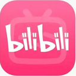

团队主页
/
TEAM HOME
01
CONTENT · VISUAL · INTELLIGENCE
PICK UP THE SENTENCE
SHIJU / 01
AI NATIVE STUDIO
拾 句
拾句AI创新团队
SHIJU AI INNOVATION TEAM
把灵感拾起，把句子写成作品。
AI 原生的内容与视觉团队
EST. 2026 · CONTENT / VISUAL / AI
大众向 · 文案编译台
/
FOR EVERYONE
PRODUCT 01
文案编译台 · COPY COMPILER
一句话，
编译成能发的。
给每一个想把话说好的人。写下产品、人群与语气，标题、正文、话题和封面，一起长出来。
- 小红书
- 公众号
- 抖音

B站
公众号长文
把一件小事，
写成一封长信。
抖音分镜
0–3s，
先抓住人。
compile / xiaohongshu
READY
标题
把下午的光，
写进一杯咖啡里。
正文
光落在杯沿的时候，连待办都慢了下来。没有复杂的构图，只有浅棕的咖啡液和窗边一小块安静的下午。
# 咖啡日常# 松弛感# 下午三点
标题 / 正文 / 话题 / 封面可复制 ↗
专业向 · AI 提示台
/
FOR PROFESSIONALS
PRODUCT 02
AI 提示台 · PROMPT DESK
把提示词，
做成生产力。
给把 AI 当同事的专业创作者。结构化提示、上下文、工作流与成品交付，在一个台面上完成。
- 结构化提示
- 上下文
- 工作流
- 成品交付
prompt_desk / session_03
LIVE
workspace / professional / session_03
USER
把这份材料，变成一份可以直接交付的提案。
01
读取上下文，提炼关键判断
DONE
02
追问缺失信息，明确交付标准
RUNNING
03
生成成品，自检后交付
WAIT>
继续追问，或直接开始…
DELIVERABLES
提案_v3.pptx
讲稿.md
检查清单
READY